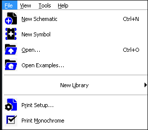
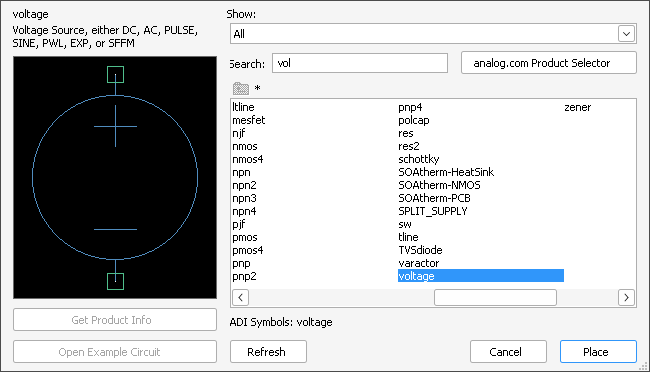
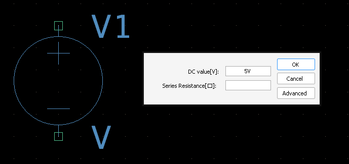
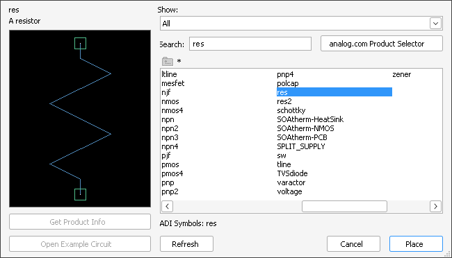
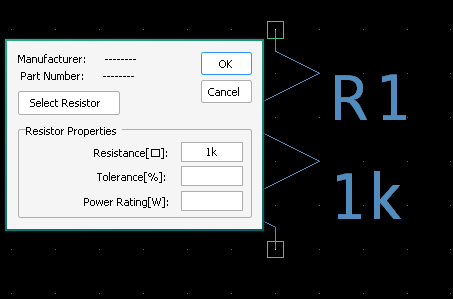
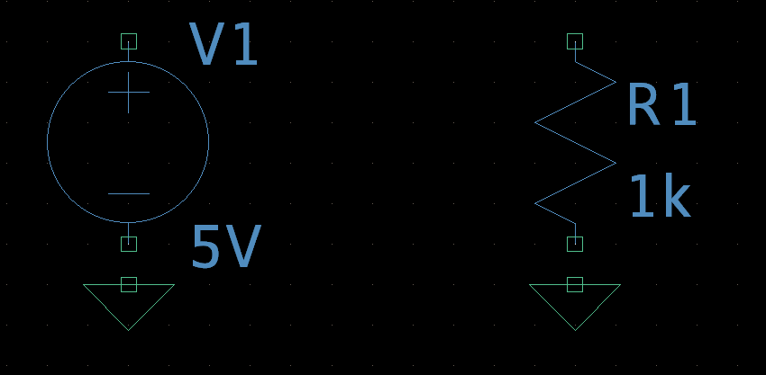
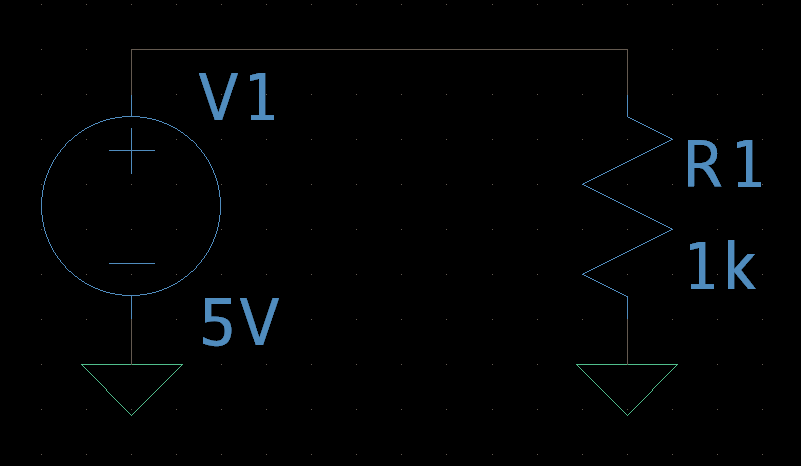
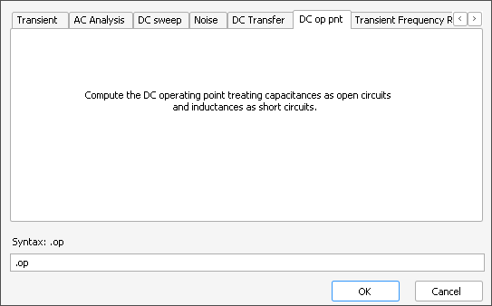
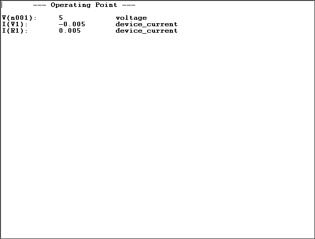

1. Basic Circuit Simulation: DC Operating Point Analysis
This tutorial will guide you through creating a simple voltage source and resistor circuit from scratch, and then performing a DC Operating Point (.op) analysis to find the steady-state voltages and currents.
1.1 Creating a New Schematic
Every simulation starts with a new schematic. Open LTSpice and follow these steps:
- Go to the File menu.
- Select New Schematic (or use the shortcut Ctrl+N).
This will open a blank canvas where you can begin designing your circuit.
1.2 Placing Essential Components
For our simple circuit, we'll need a voltage source, a resistor, and a ground reference.
1.2.1 Voltage Source (V_SRC)
The voltage source provides power to our circuit.
- Go to the Edit menu and select Component (or press P).
- In the Select Component dialog, type voltage and select voltage from the list. Click OK. 
- Place the voltage source on your schematic by clicking.
- Right-click on the voltage source symbol to open its Value dialog. Set the DC value to 5V (or any voltage you prefer). Click OK. 
1.2.2 Resistor (R)
The resistor will be our load component.
- Press P (Component tool) again or press R directly.
- Type res (for resistor) and select res from the list. Click OK. 
- Before placing, you can rotate the resistor by pressing Ctrl+R. Place it to the right of your voltage source.
- Right-click on the resistor symbol. Set its Resistance to 1k (for 1 kOhm). Click OK. 
1.2.3 Ground (GND)
Every circuit needs a ground reference for the simulator to work correctly. It defines the 0V point.
- Click the Ground icon on the toolbar (looks like a triangle with three horizontal lines, or press G).
- Place the ground symbol at the bottom of your voltage source and resistor. 
1.3 Wiring the Circuit
Now, connect your components to form a simple series circuit:
- Click the Wire tool (looks like a pencil, or press W).
- Click on the positive terminal of the voltage source and draw a wire to one end of the resistor.
- Draw a wire from the other end of the resistor down to the ground symbol.
- Draw a wire from the negative terminal of the voltage source to the ground symbol.
Ensure all connections are solid black lines. Grey lines indicate incomplete connections.
1.4 Saving Your Circuit
It's always a good idea to save your work before running simulations.
- Go to the File menu.
- Select Save As... (or press Ctrl+S).
- Choose a location and give your circuit a descriptive name (e.g., simple_dc_circuit.asc). Click Save.
1.5 Performing DC Operating Point Simulation
The DC Operating Point analysis calculates the steady-state DC voltages at each node and currents through components. This is vital for verifying correct biasing.
- Go to Simulate > Edit Simulation Cmd from the menu bar or press A.
- In the Edit Simulation Command dialog box, select the .op tab, and click OK. 
- A .op directive will appear on your cursor. Click to place it anywhere on your schematic (it won't affect the simulation, just for visual reference).
- Finally, go to Simulate > Run (or click the Play icon on the toolbar).
A new window will appear showing the DC operating points. You'll see node voltages listed (e.g., V(n001): 5V, V(n002): 0V). You can also hover over wires on your schematic to see their voltage, or hover over components to see current flow (a small probe icon will appear).
LTSpice Command (.op directive in schematic):
.opCongratulations! You've just run your first DC operating point simulation in LTSpice.